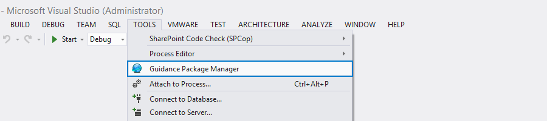
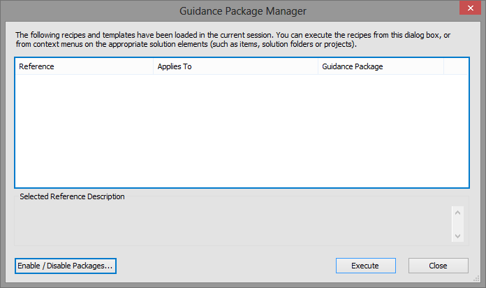
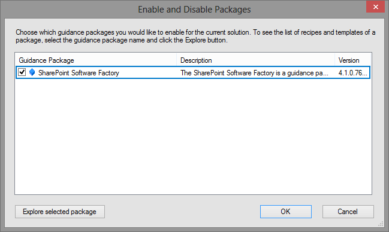
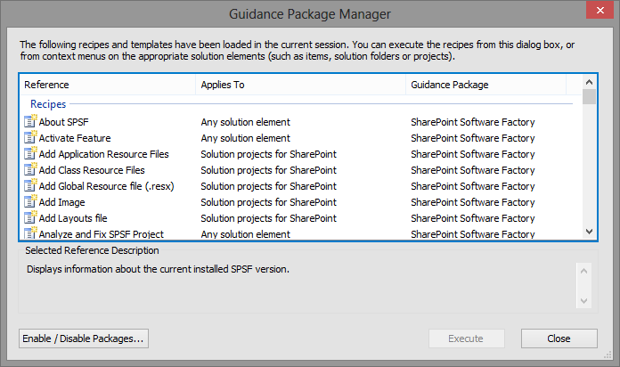
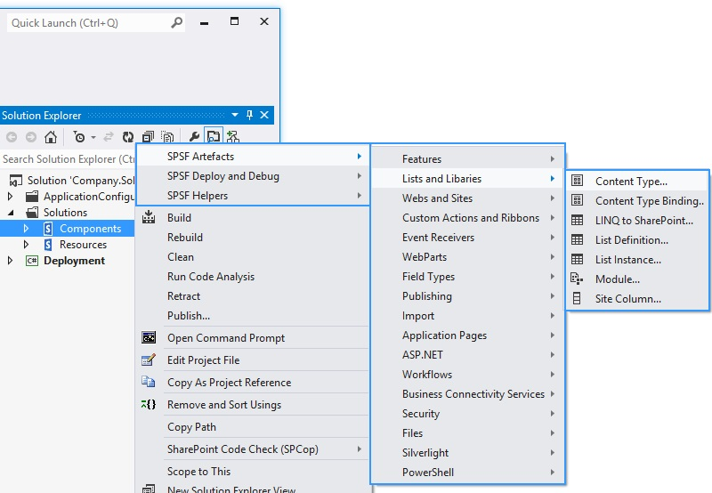

How to (re-)activate SPSF on existing projects?
In case you are adding SPSF to an existing project, or if you retrieve the solution from TFS the first time, SPSF has to be activated once.
This step is required due to the fact that Visual Studios stores the activation of SPSF in the user settings of each solution. This file is usually not stored in source control and unique for each machine/download location.
Activation Steps
To activate SPSF open the solution in Visual Studio and choose "Tools -> Guidance Package Manager"

If the following dialog window of the "Guidance Package Manager" shows the SPSF recipes then your are done!
If the dialog is empty like in the picture below, then continue by clicking "Enable / Disable Packages…"

The next dialog shows you all Guidance Packages which are installed in Visual Studio.
Check "SharePoint Software Factory" and click Ok

The Guidance Navigator opens and a message will appear that you should update the VS Solution to the new version of SPSF (we will come to that soon). Click Ok.
Now the "Guidance Package Manager" window shows all available SPSF recipes.

Click Close.
Verification
To verify that SPSF is configured, right click on a SharePoint project and the following SPSF context menus should appear.



{kind=link}
{kind=link}
{kind=link}
{kind=link}
{kind=link}